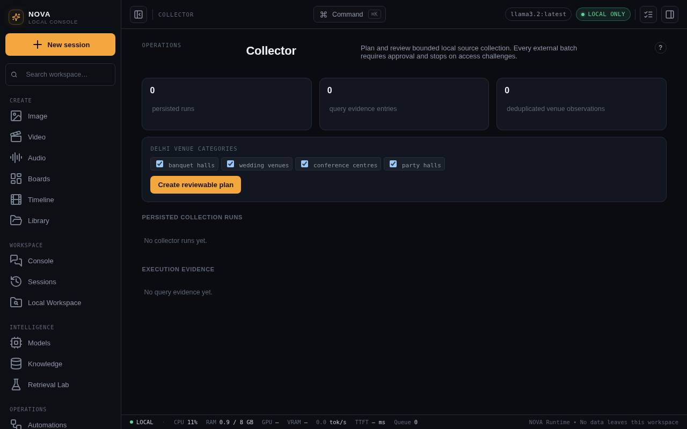
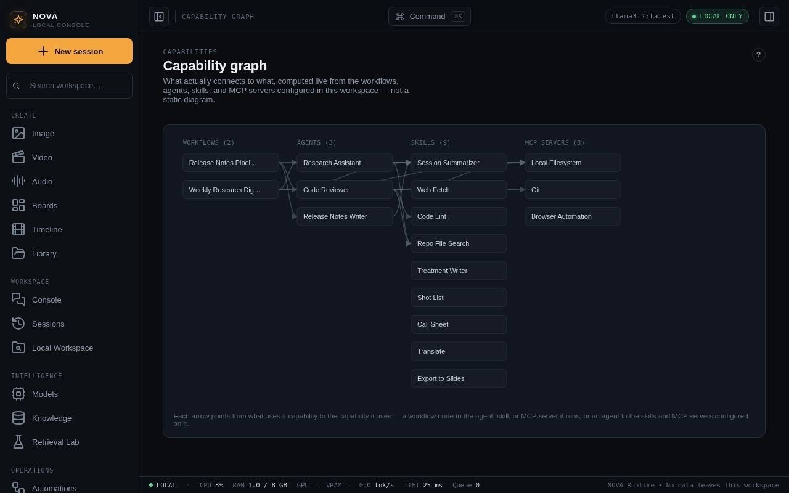
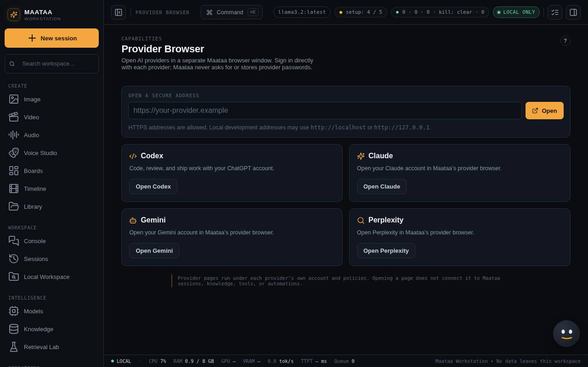

Collector, Capability Graph and Provider Browser
See the Brahmini collector's runs inside NOVA, map how everything connects, and open hosted AI providers in a separate window.
Collector
Collector shows plans, runs and evidence from the separate Brahmini Knowledge Collector app (a Next.js app in the same repository) and venue observations it recorded. It is read from that app's data; running the collector itself happens there.

Capability Graph
Capability Graph draws which workflows use which agents, and which skills and tool servers each agent may use. Use it to check what an agent can reach before you run it.

Provider Browser
Provider Browser opens Claude, ChatGPT, Gemini, Perplexity or another HTTPS site in a separate NOVA-owned window.

- Pick a provider card or type an HTTPS address. Local development pages at
http://localhostorhttp://127.0.0.1also work. - Sign in directly on the provider's page. NOVA does not see or store that password, session or key.
- The provider page stays apart from your NOVA sessions, knowledge, tools, agents and automations. Copy material across deliberately when you want to.